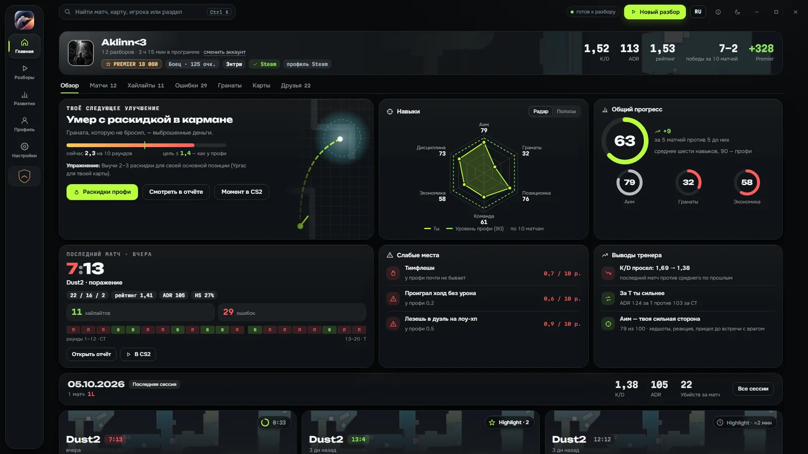
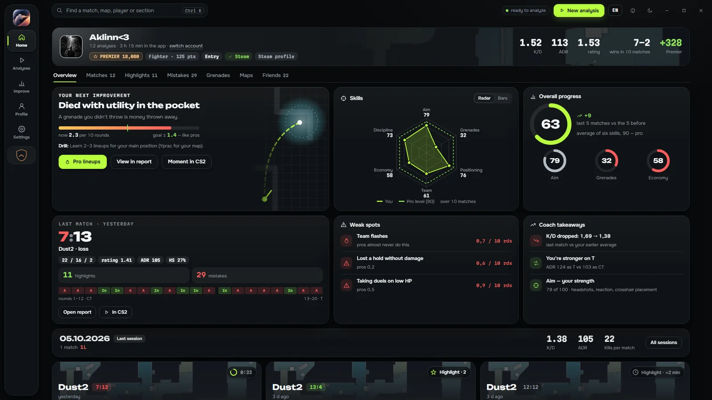
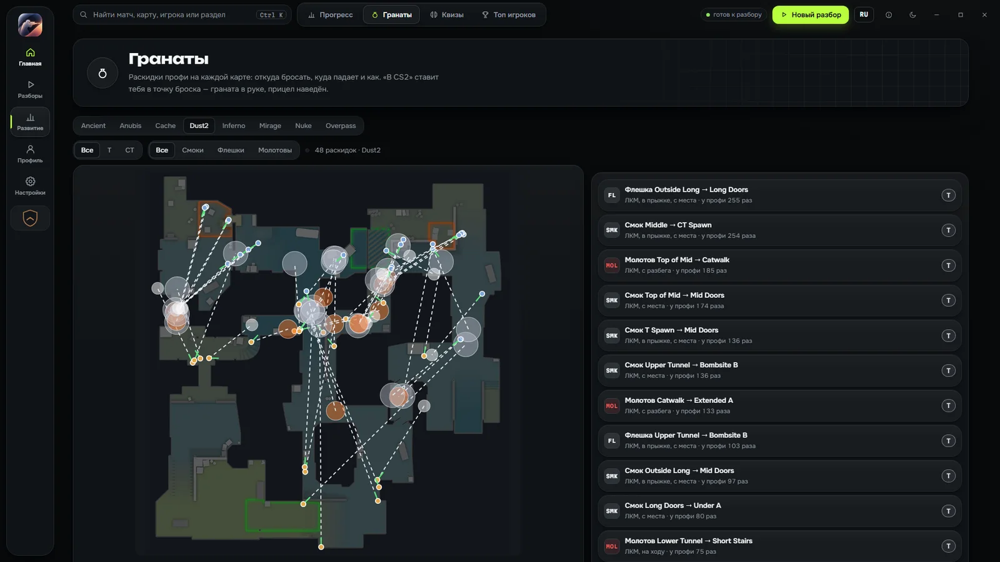
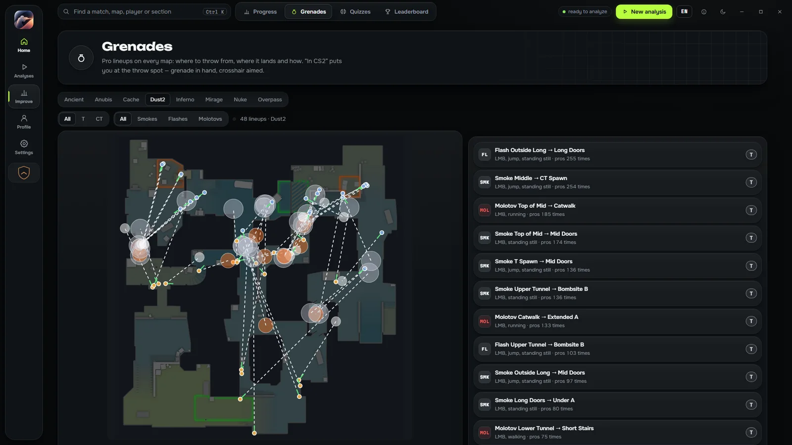

Debrief сам скачивает твои матчи, находит ошибки, показывает каждый момент на радаре и даёт упражнения прямо в игре. Всё работает на твоём ПК — демки никуда не загружаются.
Debrief downloads your matches by itself, finds your mistakes, shows every moment on the radar and gives you drills right inside the game. Everything runs on your PC — your demos are never uploaded.
Это программа для компьютера с Windows — открой страницу на ПК, чтобы скачать.
This is a Windows PC app — open this page on your computer to download it.
Ссылка скопирована — отправь её себе в мессенджер или почту.Link copied — send it to yourself in a messenger or by email.Скопируй ссылку и отправь её себе в мессенджер или почту:Copy the link and send it to yourself in a messenger or by email:
Загрузка началась. Запусти CS2Coach_Setup.exe. Если Windows покажет «Windows защитил ваш компьютер» — нажми «Подробнее» → «Выполнить в любом случае». Права администратора не нужны.
Download started. Run CS2Coach_Setup.exe. If Windows shows “Windows protected your PC”, click “More info” → “Run anyway”. No admin rights needed.
Скачивай только с этого сайта. Как проверить файл — здесь.
Only download from this site. How to verify the file — here.


10+
разделов в каждом отчёте
sections in every report
150+
матчей профи — эталон для сравнения
pro matches as the benchmark
до 3
up to 3
роликов с лучшими моментами матча
highlight clips per match
0 ₽
$0
без подписки и рекламы
no subscription, no ads
ВозможностиFeatures
От разбора матча — к тренировке и обратно
From match review to practice and back
Программа не просто считает цифры: она объясняет, почему ты проиграл раунд, и даёт, что тренировать.
It doesn’t just count numbers: it explains why you lost the round and tells you what to practice.
Разбор как от тренера
A coach-style review
Ошибки с объяснением: почему проиграл дуэль и что делать вместо. Каждый момент — на радаре: где стоял ты, где враг, куда смотрел прицел.
Mistakes explained: why you lost the duel and what to do instead. Every moment on the radar — where you stood, where the enemy was, where your crosshair pointed.
Оценка матча A+…E и рейтинг 2.0
Сравнение с лобби и с уровнем профи
2D-повтор раундов
Match grade A+…E and Rating 2.0
Compared with your lobby and pro level
2D round replay
Тренировка в самой CS2
Practice inside CS2
Программа кладёт в CS2 свой конфиг: на NumPad — места твоих смертей, позиции и раскидки профи. Зашёл на карту — и отрабатываешь именно свои ошибки.
The app adds its own config to CS2: NumPad keys take you to the spots where you died, pro positions and pro lineups. Load the map and drill exactly your mistakes.
Раскидки профи на 8 картах
Квизы по позициям и раскидкам
План на неделю под твоё время
Pro lineups on 8 maps
Quizzes on positions and lineups
Weekly plan that fits your schedule
Highlight
После игры программа сама записывает до 3 роликов: эйсы, выигранные клатчи, 3K и 4K. Из любого — вертикальная версия для TikTok и Shorts в один клик.
After you play, the app records up to 3 clips by itself: aces, won clutches, 3Ks and 4Ks. Turn any of them into a vertical TikTok / Shorts video in one click.
1080p, 60 кадров, от твоего лица
Звук игры, без чужой музыки
Плашка с твоим ником
1080p at 60 fps, first-person
Game audio, no third-party music
Your nickname on the intro card
Матчи подтягиваются сами
Matches arrive by themselves
Войди через Steam — последние матчи Премьера и соревновательного режима скачаются и разберутся без кнопок. Демки FACEIT и любые другие — просто перетащи в окно.
Sign in with Steam — your latest Premier and Competitive matches download and get reviewed with no clicks. FACEIT and any other demos — just drag them into the window.
.dem и архивы .zst, .gz, .bz2, .zip, .rar
Авторазбор новых демок
Уведомление, когда отчёт готов
.dem and .zst, .gz, .bz2, .zip, .rar archives
New demos are reviewed automatically
A notification when the report is ready
Прогресс и уровень
Progress and level
ELO как на FACEIT: зависит не только от победы, но и от того, как ты сыграл. Цели из твоих же ошибок и «Мой профиль» с формой, винрейтом и сильными сторонами.
FACEIT-style ELO that depends not only on the win but on how you played. Goals built from your own mistakes and a profile with form, win rate and strengths.
Цель засчитана — 5 матчей подряд
Статистика за всё время
Лига игроков Debrief
A goal counts after 5 matches in a row
All-time stats
Debrief player league
Друзья и проверка игрока
Friends and player check
Сравни себя с друзьями, с которыми играл: рейтинг, ADR, частые ошибки. Проверка аккаунта соперника — VAC, возраст, часы — и его игры по демке на странности.
Compare yourself with friends you played with: rating, ADR, common mistakes. Check an opponent’s account — VAC, age, hours — and look for oddities in their play from the demo.
Ты · друг · профи — в одной таблице
Разбор матча глазами друга
Без громких ярлыков — только факты
You · friend · pro side by side
Review a match from a friend’s view
No loud labels — just facts
ОтчётReport
Один матч — один понятный отчёт
One match — one clear report
Главное за 30 секунд: итоговая оценка, что получилось и что мешало. Дальше — по разделам: таблица матча, ошибки, раунды, стрельба, гранаты, экономика.
The essentials in 30 seconds: your grade, what worked and what got in the way. Then section by section: scoreboard, mistakes, rounds, shooting, grenades, economy.
Каждая ошибка — с моментом на радаре и советом, что делать
Твои цифры против лобби и уровня профи
Открывается в браузере, работает без интернета, сохраняется в PDF
Every mistake comes with the moment on the radar and a fix
Откуда бросать, куда падает и как: в прыжке, с места или с разбега. Кнопка «В CS2» готовит тренировку: точка броска, граната в руке, прицел наведён.
Where to throw from, where it lands and how: jump-throw, standing or running. The “In CS2” button sets up the drill: throw spot, grenade in hand, crosshair aimed.
Раскидки собраны из реальных матчей профи
Твои гранаты против профи: урон, гранат за раунд, смерти с гранатой в кармане
Lineups collected from real pro matches
Your utility vs pros: damage, grenades per round, deaths with utility unused


Highlight
Лучшие моменты — уже готовые ролики
Your best plays — as ready-made clips
Программа ждёт, пока ты закроешь CS2, и сама записывает ролики из демки от твоего лица. Монтаж, замедление на последнем фраге и плашка с ником — уже внутри.
The app waits until you close CS2, then records clips from the demo in first person by itself. Editing, slow-mo on the last kill and your nickname card are already in.
Горизонтальный 1080p60 и вертикальный 9:16 для TikTok / Shorts
Хранятся на твоём ПК, старые ролики удаляются сами
Нужны Steam и CS2; запись идёт, только когда ты не играешь
Landscape 1080p60 and vertical 9:16 for TikTok / Shorts
Stored on your PC, old clips are cleaned up automatically
Needs Steam and CS2; recording runs only while you’re not playing
Как начатьGet started
Три шага до первого разбора
Three steps to your first review
1
Скачай и установи
Download and install
Установщик ставит программу в твою папку пользователя — права администратора не нужны.
The installer puts the app into your user folder — no admin rights needed.
2
Войди через Steam
Sign in with Steam
Матчи из CS2 подтянутся сами. Или перетащи в окно любую демку — FACEIT, турнирную, свою.
Your CS2 matches come in by themselves. Or drag any demo into the window — FACEIT, tournament, your own.
3
Открой отчёт
Open the report
Смотри ошибки, тренируй их в игре и следи, как растёт уровень от матча к матчу.
See your mistakes, drill them in game and watch your level grow match after match.
Твои данные — на твоём ПК
Your data stays on your PC
Демки, отчёты, ролики и цели хранятся только у тебя. Автору уходит минимум статистики — и только если ты разрешишь. Ничего не продаём, рекламы нет.
Demos, reports, clips and goals are stored only on your PC. The author receives minimal usage stats — and only if you allow it. Nothing is sold, there are no ads.
Как убедиться, что установщик настоящий?How do I know the installer is genuine?
Скачивай Debrief только с этого сайта — aklinn00-create.github.io. «Премиум», «взломанных» или «с читами» версий не существует: такой файл — всегда вирус. Программа никогда не спрашивает логин и пароль Steam: вход только на странице самого Steam (steamcommunity.com).
Only download Debrief from this site — aklinn00-create.github.io. There are no “premium”, “cracked” or “with cheats” versions: such a file is always a virus. The app never asks for your Steam login or password: you sign in only on Steam’s own page (steamcommunity.com).
Проверить сам файл: открой PowerShell и выполни команду — строка Hash должна совпасть с контрольной суммой ниже.
To check the file itself, open PowerShell and run the command — the Hash line must match the checksum below.
SHA-256 установщика версии 2.6.2 (—):SHA-256 of the version 2.6.2 installer (—):
—
Обновления программа проверяет сама: у каждого есть цифровая подпись автора, и подменённое обновление программа не установит.
The app checks updates by itself: each one carries the author’s digital signature, and the app won’t install a tampered update.
Раньше программа называлась CS2 Coach?Was it called CS2 Coach before?
Да, это та же программа — Debrief её новое имя. Если у тебя стоит CS2 Coach, новое имя придёт с обновлением само: отчёты, цели и настройки останутся на месте.
Yes, it’s the same app — Debrief is its new name. If you have CS2 Coach installed, the new name arrives with an update by itself: your reports, goals and settings stay.
Это правда бесплатно?Is it really free?
Да: без подписки и без рекламы. ИИ-тренер — по желанию и работает с твоим ключом Anthropic: один разбор стоит примерно $0,05–0,10, платишь напрямую Anthropic. Без ключа всё остальное работает полностью.
Yes: no subscription and no ads. The AI coach is optional and uses your own Anthropic key: one review costs about $0.05–0.10, paid directly to Anthropic. Without a key everything else works in full.
Не забанят ли меня (VAC)?Can I get banned (VAC)?
Программа не вмешивается в игру во время матча: она читает демки, которые CS2 уже сохранила. Тренировочный конфиг работает на твоём локальном сервере.
Для роликов Highlight программа запускает CS2 через HLAE с ключом -insecure — в этом режиме игра вообще не подключается к серверам с VAC. Так записывают ролики мувимейкеры. Запись идёт только когда CS2 закрыта, то есть когда ты не играешь.
The app doesn’t touch the game during a match: it reads demos CS2 has already saved. The practice config runs on your local server.
For Highlight clips the app starts CS2 through HLAE with the -insecure flag — in this mode the game doesn’t connect to VAC-secured servers at all. That’s how movie makers record clips. Recording only starts when CS2 is closed, i.e. when you’re not playing.
Windows пишет «Windows защитил ваш компьютер»Windows says “Windows protected your PC”
У программы пока нет платной цифровой подписи, поэтому фильтр SmartScreen её ещё не знает. Нажми «Подробнее» → «Выполнить в любом случае».
Если в Windows 11 включено «Интеллектуальное управление приложениями», оно может не пустить установщик совсем. Подпись программы — в планах.
The app doesn’t have a paid code signature yet, so SmartScreen doesn’t know it. Click “More info” → “Run anyway”.
If Smart App Control is on in Windows 11, it may block the installer completely. Code signing is planned.
Что нужно для работы?What do I need?
Windows 10 или 11 (64-бит). Для автоскачивания матчей и записи роликов — Steam и установленная CS2. Разбор демок, которые у тебя уже есть, работает и без них.
Windows 10 or 11 (64-bit). To download matches automatically and record clips — Steam and CS2 installed. Reviewing demos you already have works without them.
Какие демки подходят?Which demos are supported?
Любые демки CS2 (.dem): Премьер, соревновательный, FACEIT, турнирные — и архивы .zst, .gz, .bz2, .zip, .rar. Демки CS:GO не поддерживаются.
Any CS2 demo (.dem): Premier, Competitive, FACEIT, tournament — plus .zst, .gz, .bz2, .zip, .rar archives. CS:GO demos are not supported.
Where demos are stored and how to download a match — see the guide.
Есть английский язык?Is there a Russian version?
Да. Весь интерфейс и отчёты — на русском и английском. Язык выбирается по Windows, переключить можно кнопкой RU / EN в верхней строке.
Yes. The whole interface and all reports come in English and Russian. The language follows Windows; switch it any time with the RU / EN button at the top.
Как обновляться?How do updates work?
Программа сама проверяет обновления и ставит их поверх — отчёты и настройки остаются. Обновления подписаны: подменённое обновление программа не примет.
The app checks for updates by itself and installs them on top — your reports and settings stay. Updates are signed: the app won’t accept a tampered update.
Как удалить?How do I uninstall?
Параметры Windows → Приложения → Debrief → Удалить. Программа спросит, удалить ли заодно отчёты и настройки.
Windows Settings → Apps → Debrief → Uninstall. The app will ask whether to delete your reports and settings too.
Следующая демка — уже с разбором
Your next demo — already reviewed
Скачай Debrief, войди через Steam и открой отчёт по последнему матчу.
Download Debrief, sign in with Steam and open the report on your last match.